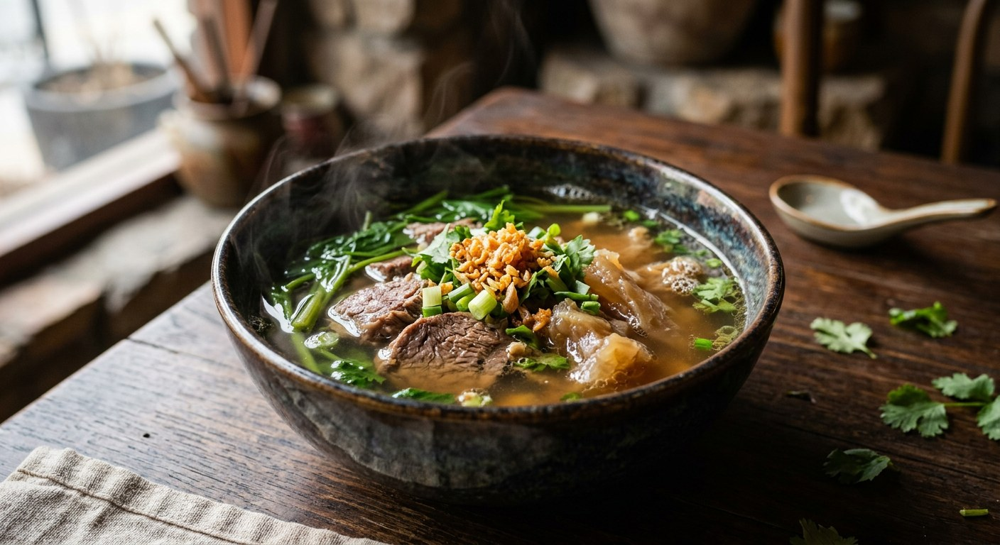

Thai clear-broth soup with stewed beef or pork, served without noodles — the broth is the point: slow-simmered, skimmed clean, and finished with fried garlic, herbs and a chilli-vinegar sauce.

เกาเหลา
Kao lao is the dish Thai noodle shops serve when you want the soup without the noodles — a bowl of clean, slow-simmered broth carrying stewed beef, tendon or sliced pork, finished with fried garlic and herbs. The name marks the difference: kuay tiao is the noodle bowl, kao lao is the same broth, naked.
The broth is the entire point. Thai cooks judge a kao lao shop by its broth alone — whether it's the light, peppery clear stock built on pork bones and radish, or the dark, spiced stewing liquor of the beef version that has simmered with cinnamon and star anise for the best part of a day.
| Thai | English | Amount |
|---|---|---|
| น้ำสะอาด | Water | 4-5 litres |
| รากผักชี | Coriander root, bruised | 4-6 stalks |
| กระเทียม | Garlic, bruised | 8-10 cloves |
| พริกไทยเม็ด | White peppercorns, crushed | 1 tbsp |
| หัวไชเท้า | White radish, halved — optional, for sweetness | 1 |
| Thai | English | Amount |
|---|---|---|
| เนื้อพื้นท้อง / น่องลาย | Beef brisket or shank | 1.5-2 kg |
| เอ็นวัว | Beef tendon, for en dtoon | 500g |
| ซีอิ๊วดำ | Dark soy sauce | 3-4 tbsp |
| อบเชย | Cinnamon | 2-3 sticks |
| โป๊ยกั๊ก | Star anise | 5-6 flowers |
| หญ้ามังกร | Licorice root, optional, in the herbal version | 50g |
| ผงพะโล้ | Five-spice powder (phalo) | 2-3 tbsp |
| น้ำตาลปี๊บ | Palm sugar | 2-3 tbsp |
| ซอสปรุงรส | Seasoning sauce | 2 tbsp |
| น้ำปลา | Fish sauce | 2 tbsp |
| เกลือ | Salt | 1 tbsp |
| Thai | English | Amount |
|---|---|---|
| กระดูกหมู | Pork bones | 1 kg |
| เนื้อหมูหั่นชิ้น | Sliced pork | 400g |
| ลูกชิ้นหมู | Pork balls, optional | 500g |
| ซีอิ๊วขาว | Light soy sauce | 2-3 tbsp |
| เกลือ | Salt | 1 tsp |
| น้ำตาลทราย | Sugar | 1 tbsp |
| Thai | English | Amount |
|---|---|---|
| กระเทียมเจียว | Fried garlic | generous |
| ต้นหอม ผักชี | Spring onion and coriander | to finish |
| ผักกาดหอม ถั่วงอกลวก | Lettuce and blanched bean sprouts | to serve |
| น้ำส้มพริกดอง | Chilli-vinegar sauce | to serve |
| พริกป่นคั่ว | Roasted chilli flakes | to serve |
The clear pork school is quick and light: pork bones blanched, simmered with coriander root, garlic and white pepper, sweetened with white radish, seasoned with light soy. Ready in under an hour, peppery rather than spiced.
The spiced beef school is the one with the following. Beef brisket or shank goes into the pot with dark soy, cinnamon, star anise, five-spice powder and palm sugar, and simmers for five to six hours until the meat is tender enough to slice cold. The Ratchawat neighbourhood of Bangkok is the benchmark for this style, and its shops serve the meat sliced thin, laid over lettuce with the spiced broth ladled over — with a chilli-vinegar sauce on the side.
Skim constantly. Every source says the same thing: fat and scum must come off the surface throughout the simmer, or the broth clouds. The Ratchawat recipe describes watching the pot and skimming the "ไข" — the rendered scum — every time it rises.
Six hours is the beef benchmark. The Pantip classic is explicit: boil the meat to that point and no less, then the extra trick — chill the cooked beef so it firms, slice it cold so it cuts clean instead of shredding, and return the slices to the spiced broth for a final half-hour simmer until the collagen renders out and the liquid goes slightly sticky.
Tendon belongs to this dish. En dtoon — stewed tendon — goes into the pot with the beef from the start and takes the whole stewing time. The result is soft, gelatinous pieces that are the prized part of the bowl.
The bowl is assembled upside-down from a noodle soup: lettuce and blanched bean sprouts line the bowl first, the meat and tendon go on top, the hot broth is ladled over, and the fried garlic, spring onion and coriander finish it. Chilli-vinegar sauce and roasted chilli flakes come on the side. Rice on the side is common; noodles never are.
The broth improves for being made ahead — stewed beef keeps in its broth for days, and the liquid can carry a second batch of meat. The quick pork version is a same-day soup; it does not hold like the stewed one.
This recipe is translated from the following Thai-language sources. Where they disagree, we've said so.
1. Krua.co — เนื้อเปื่อย (stewed beef) — https://krua.co/recipe/braised-beef-soup
2. Krua.co — เกาเหลาแห้งเพชรบุรี (Phetchaburi dry style) — https://krua.co/recipe/vegetable-noodle
3. Kapook — เกาเหลาเนื้อตุ๋น — https://cooking.kapook.com/view156162.html
4. Kapook — เกาเหลาหมูต้มยำ — https://cooking.kapook.com/view285366.html
5. Cookpad — เกาเหลาก๋วยเตี๋ยวน้ำใสกระดูกหมู — https://cookpad.com/th/recipes/13645737
6. Pantip — เนื้อตุ๋นราชวัตร สูตรโบราณ — https://pantip.com/topic/32284785
7. Pantip — เกาเหลาเนื้อตุ๋น (shop recipe) — https://pantip.com/topic/33923086
8. Pantip — เกาเหลาเนื้อตุ๋นน้ำใส — https://pantip.com/topic/35554684
9. Wongnai — เกาเหลาเนื้อตุ๋น — https://www.wongnai.com/recipes/ugc/2e1fc7d744b4413eb32b87867fdba6ae